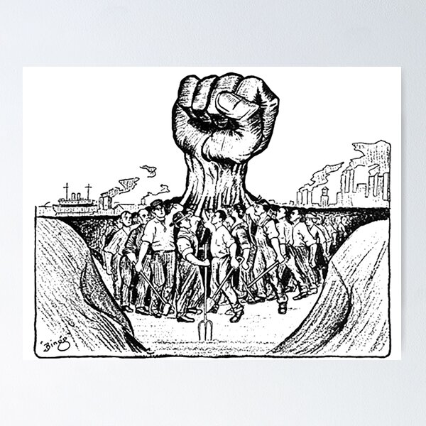

Los sindicatos en españa

Principales contenidos del articulo
- Orígenes del movimiento obrero: Una mirada profunda
- Consolidación de los sindicatos: Una lucha por la defensa de los trabajadores
- Regulación actual de los sindicatos: Un marco legal para la defensa de los trabajadores
- Funciones de los sindicatos: Un pilar fundamental para la defensa de los trabajadores
Orígenes del movimiento obrero: Una mirada profunda
1.1 Contexto histórico:
A finales del siglo XVIII y principios del XIX, la Revolución Industrial transformó radicalmente las sociedades. La mecanización de la producción y la aparición de las fábricas concentraron a grandes cantidades de trabajadores en condiciones precarias.
1.2 Condiciones laborales inhumanas:
Las largas jornadas de trabajo, que podían llegar hasta 14 o 16 horas al día, se combinaban con salarios ínfimos y nula seguridad laboral. Los trabajadores, a menudo mujeres y niños, sufrían accidentes, enfermedades y una pobreza extrema.
1.4 Primeras asociaciones y protestas:
Las primeras asociaciones de trabajadores, conocidas como "sociedades de ayuda mutua", se formaron para brindar apoyo económico y social a sus miembros. A medida que el movimiento obrero ganaba fuerza, las protestas y huelgas se multiplicaron.
1.5 Hitos históricos:
Algunos hitos importantes en la historia del movimiento obrero incluyen:
- 1792: Huelga de trabajadores textiles en Manchester, Inglaterra.
- 1831: Primera huelga general en Lyon, Francia.
- 1848: Publicación del Manifiesto Comunista de Marx y Engels.
- 1871: Comuna de París, primera experiencia de gobierno obrero.
Consolidación de los sindicatos: Una lucha por la defensa de los trabajadores
2.1 Superando la clandestinidad:
Las primeras asociaciones de trabajadores se vieron obligadas a actuar en secreto debido a la represión por parte de las autoridades y los propietarios de las fábricas. A pesar de los riesgos, estas asociaciones sentaron las bases para la formación de los sindicatos modernos.
2.2 Hacia la legalización y el reconocimiento:
A lo largo del siglo XIX, el movimiento obrero ganó fuerza y logró la legalización de los sindicatos en muchos países. Esta legalización permitió a los sindicatos actuar públicamente y defender los intereses de los trabajadores de forma más efectiva.
Regulación actual de los sindicatos: Un marco legal para la defensa de los trabajadores
3.1 Reconocimiento constitucional:
La Constitución Española de 1978 reconoce el derecho a la sindicación y la huelga en el artículo 28. Este reconocimiento legal consolida la libertad de los trabajadores para organizarse y defender sus intereses.
3.2 Ley Orgánica de Libertad Sindical:
La Ley Orgánica de Libertad Sindical de 1985 desarrolla el derecho a la sindicación y establece el marco legal para el funcionamiento de los sindicatos en España. Esta ley define los tipos de sindicatos, los requisitos para su constitución, sus derechos y obligaciones.
3.3 Requisitos para la constitución de un sindicato:
La Ley Orgánica de Libertad Sindical establece algunos requisitos para la constitución de un sindicato, como:
- Un mínimo de 500 afiliados.
- Un acta fundacional que recoja los estatutos del sindicato.
- La elección de una junta directiva.
- La inscripción en el Registro de Sindicatos.
3.4 Derechos de los sindicatos:
Los sindicatos tienen reconocidos una serie de derechos, como:
- El derecho a la negociación colectiva.
- El derecho a la huelga.
- El derecho a la representación de los trabajadores en los órganos de gobierno de las empresas.
- El derecho a la participación en la elaboración de las leyes laborales.
Funciones de los sindicatos: Un pilar fundamental para la defensa de los trabajadores
4.1 Negociación colectiva:
Los sindicatos desempeñan un papel fundamental en la negociación de los convenios colectivos, que son acuerdos entre las empresas y los representantes de los trabajadores que establecen las condiciones de trabajo para los empleados. Los sindicatos negocian aspectos como:
- Salarios.
- Jornada laboral.
- Vacaciones.
- Permisos.
- Seguridad laboral.
- Derechos sociales.
4.2 Representación legal:
Los sindicatos también representan a los trabajadores en los procesos judiciales relacionados con el ámbito laboral. Esto incluye:
- Despidos.
- Accidentes laborales.
- Impagos de salarios.
- Discriminación laboral.
4.3 Formación y asesoramiento:
Los sindicatos ofrecen formación a los trabajadores sobre sus derechos y obligaciones en el ámbito laboral. Esta formación puede abarcar temas como:
- Derechos fundamentales de los trabajadores.
- Convenios colectivos.
- Seguridad laboral.
- Salud laboral.
- Negociación colectiva.
4.3 Impacto social y económico:
Las funciones de los sindicatos tienen un impacto positivo en la sociedad y la economía. Al defender los derechos de los trabajadores, los sindicatos contribuyen a:
- Mejorar las condiciones de trabajo.
- Reducir la desigualdad salarial.
- Promover la seguridad laboral.
- Fortalecer la democracia.
- Impulsar el crecimiento económico.